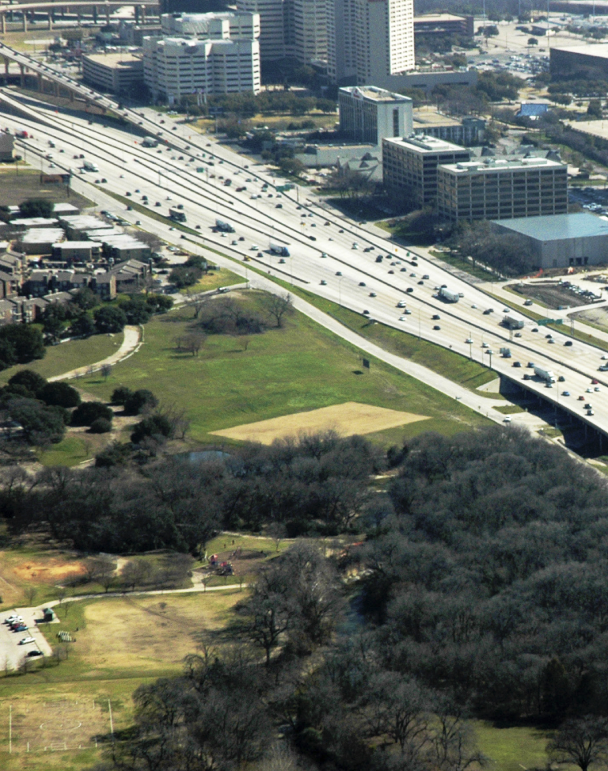

IH 635 (LBJ)
Dallas, Texas, USA
2011-2016
The IH-635 (LBJ Freeway) Managed Lanes Project is the most regionally significant transportation improvement project in North Texas. It will rebuild one of the busiest and most congested highways in North Texas by 2016.
Construction is expected to start early 2011. The project will be designed and built concurrently, saving several years from the project schedule. When complete, it will provide improved mobility by almost doubling the existing roadway capacity.
This Project is by far the largest private-public undertaken in the US, by complexity and by investment value
27 Km
2,07 B $

Overview
2'50''